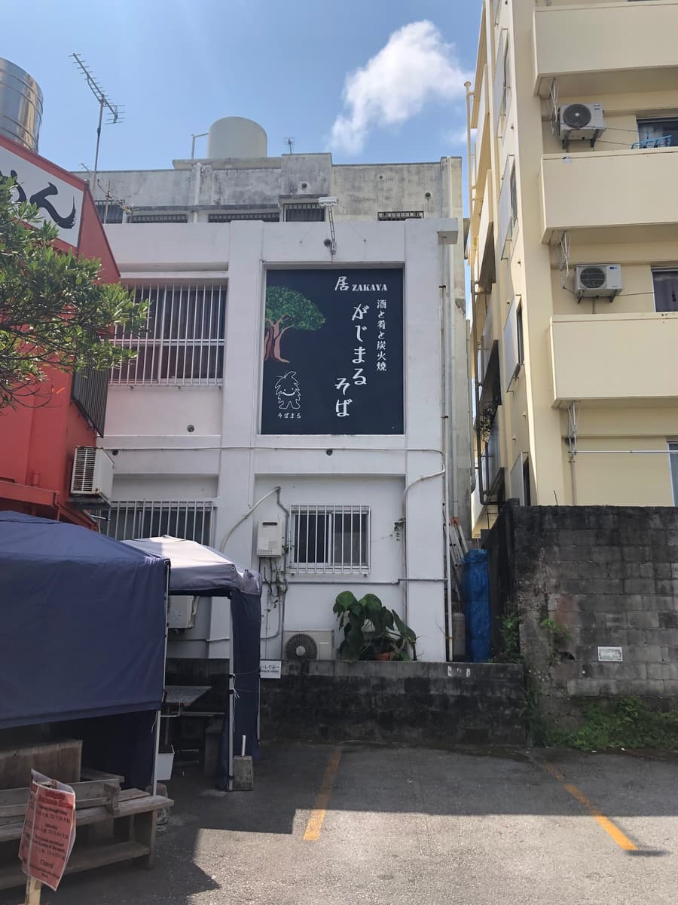
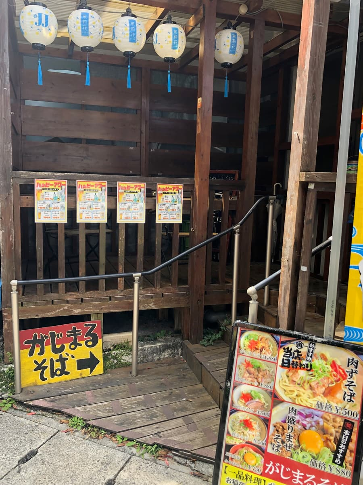
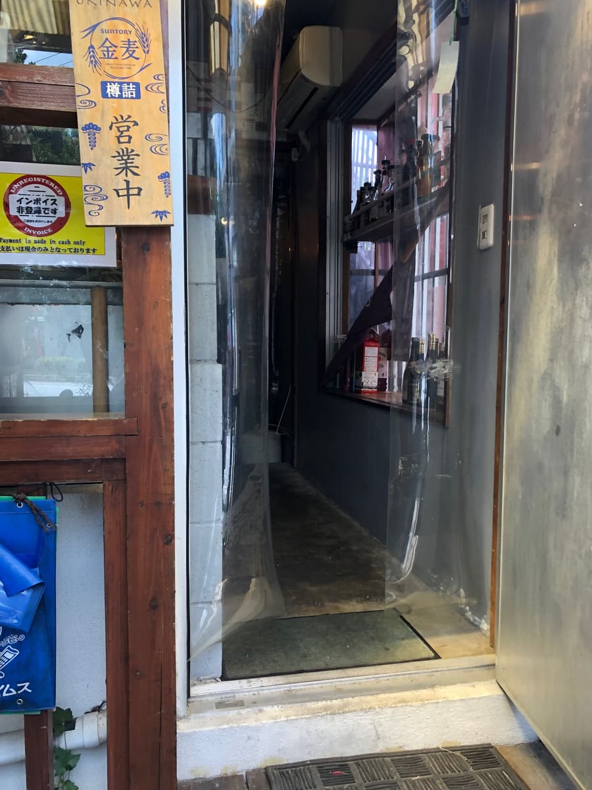
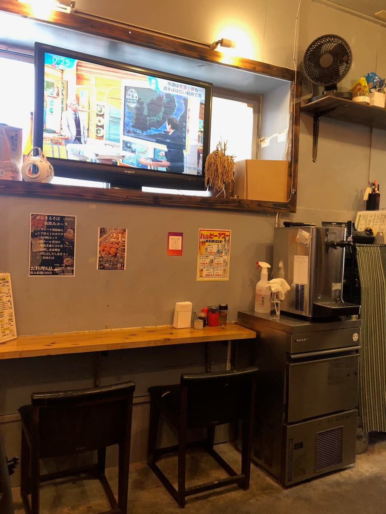
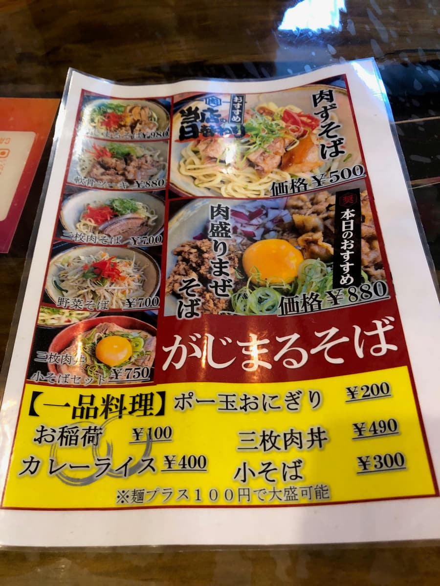
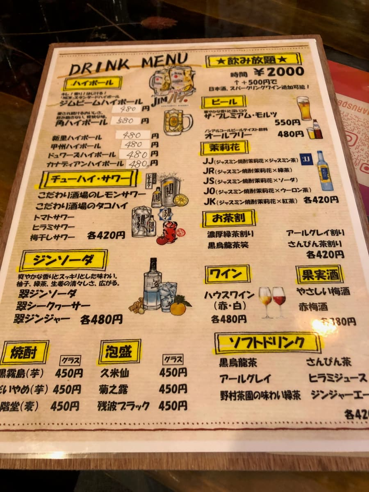
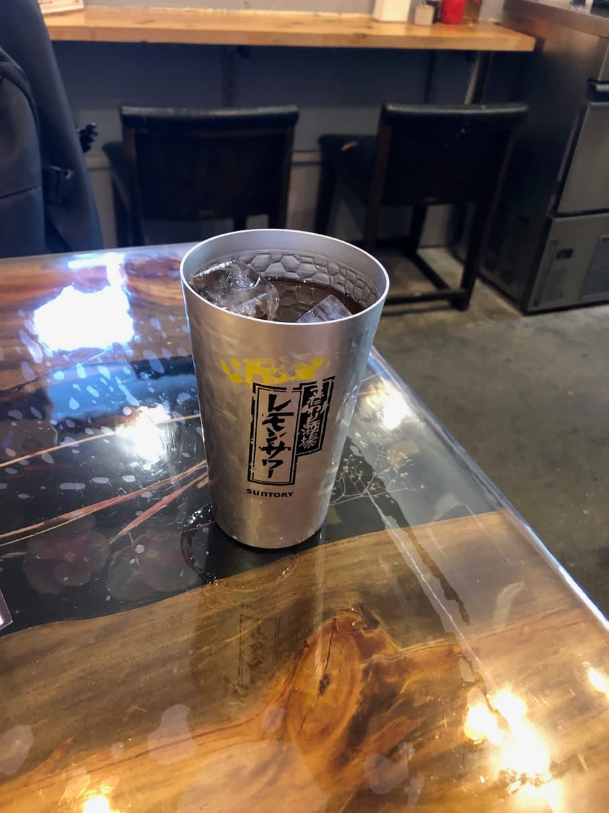
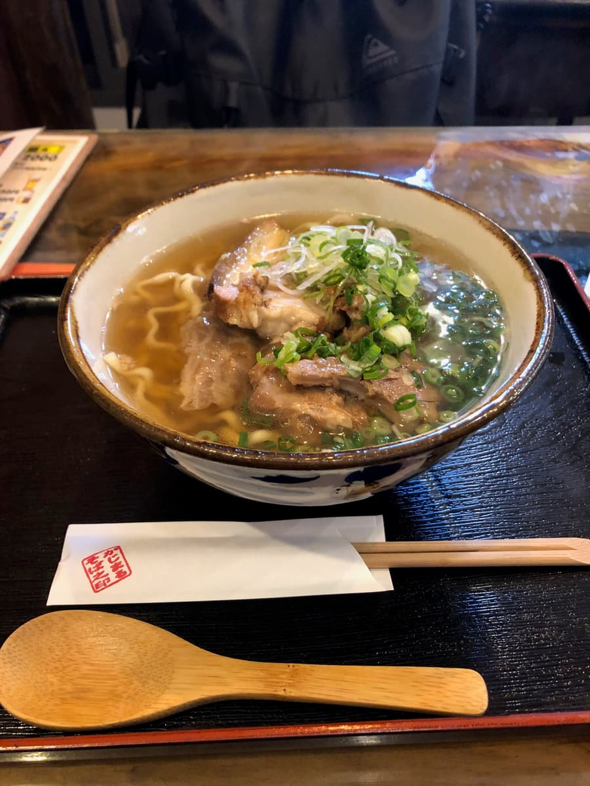
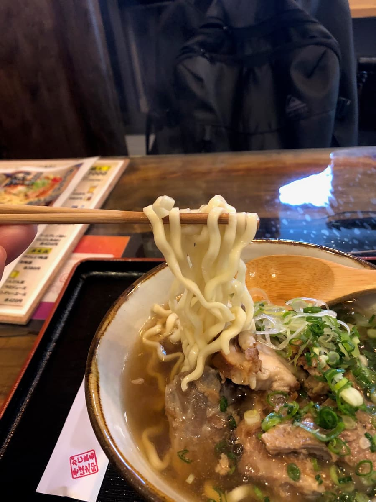

This time I visited "Gajimaru Soba" in Gusukuma, Urasoe City. I went to eat here in March 2025 😁😊

Looking at the exterior, the big sign on the building's wall reading "iZAKAYA Sake, Snacks and Charcoal Grill Gajimaru Soba" catches the eye 😄 The sign has illustrations of a banyan tree and a kijimuna, giving off a very Okinawan atmosphere.


Near the entrance there's a yellow, handwritten-style guide sign reading "Gajimaru Soba →" and a stand with menu photos, so even first-timers can get there without getting lost ✨ Lanterns hang at the entrance, giving a glimpse of its other face as an izakaya at night.

Stepping into the shop, a simple yet stylish space opens up, with counter seats lined along walls in an exposed-concrete style. There's a big TV mounted on the wall, so it feels like you can eat leisurely while watching TV 😊 It's cash only, so don't forget to have cash ready (these days more and more shops accept cashless payment, so I do hope something can be done about this lol).


Looking at the menu, starting with the signature "Gajimaru Soba (¥980)", there's a richly varied lineup with "Nikuzu Soba (¥500)", "Meat-Piled Mazesoba (¥880)", "Braised Pork Belly Soba (¥700)" and "Vegetable Soba (¥700)". What stands out is that the "Nikuzu Soba" is set at quite a reasonable ¥500 🎵 On top of that, side dishes like "Small Soba ¥300", "Pork Tamago Onigiri ¥200" and "Curry Rice ¥400" are plentiful too, so it seems they'd make good companions for the evening izakaya hours as well. By the way, looking at the drink menu, they have everything from awamori, shochu, highballs and chuhai to jasmine (matsurika) cocktails, and apparently there's an all-you-can-drink plan for ¥2,000. If you came at night, the drinks would surely be delicious lol 🍺

This time I ordered the "Gajimaru Soba (¥980)", which shares the shop's name. If you're going to eat here, you've got to try the soba bearing the shop's name 😊
While I was waiting at the table, the Gajimaru Soba appeared on a wooden tray, set on the table's glossy, stylish top 🍜 The visual of a very Okinawan bowl with a pale blue rim topped with plenty of green onions whets the appetite.

First, as usual, a sip of the broth. It's a blended stock of pork bone and bonito, finished so you can properly taste the savoriness of both 😋 If anything, the pork bone comes through slightly more. It feels plain tasty.

Next, lifting the noodles, medium-thick curly noodles appeared 😄 You can clearly see the wavy curls. Eating them, they have a slightly chewy texture.
For toppings there are both braised pork belly (sanmai-niku) and soft-bone pork ribs (nankotsu soki), with a chunky sense of volume ✨ However, both the braised pork belly (sanmai-niku) and the soft-bone pork ribs (nankotsu soki) had quite a sinewy texture, and honestly I'd have been even happier if they'd been simmered a bit more melt-in-your-mouth 😅 The green onion topping is generous, and its crisp texture and refreshing aroma make a nice accent
Rating (9/15): All in all, it was a stable bowl that's "plain tasty"~. It's the lunchtime operation of a shop that's an izakaya at night, so when you're in the area, why not drop by?
Noodles: ★★★☆☆（3）
Soup: ★★★☆☆（3）
Toppings: ★★★☆☆（3）